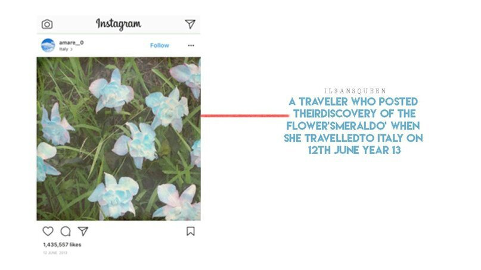

Сегодня я расскажу вам, как цветок, ставший «цветком-легендой», пришёл в этот мир. Фактически, пять лет назад, когда я услышал о смеральдо на ивенте Академии Игральных Карт, было установлено, что это только легенды. (Я расскажу о связи цветка с картами чуточку позднее.)
Но в один из летних дней 2013 года я получил шокирующую новость. До сих пор помню этот день. Я умывался, когда раздался звонок телефона. Это был друг, которого я встретил на ивенте Игральных Карт. Мы вместе посетили лекцию и были очарованы тем цветком, поэтому после поддерживали связь. Я жил в Северной Дакоте, а она — в Сан-Франциско, но расстояние не имело значения, когда у нас были схожие увлечения. Возвращаясь к теме, она сказала мне, что, похоже, смеральдо был обнаружен в реальной жизни. Я ничего не мог произнести некоторое время. Мы восторженно кричали друг другу в трубку. Упомянутая фотография стала первым доказательством существования смеральдо. Я до сих пор ощущаю тепло, смотря на неё.
В это время человек под ником ‘amtest(amare_0)’ был известным путешественником в Инстаграме, где и опубликовал фото цветка, который он случайно обнаружил на севере Италии. ‘amtest(amare_0)’ до этого не слышал о смеральдо, но понимал, что это самый красивый и уникальный цветок, с которым он сталкивался во время путешествий. Но некоторые люди в комментариях заметили о схожести со смеральдо, поэтому история распространилась, словно лесной пожар. Местные историки раскрыли важную информацию о старом названии этого места — ‘La Città di smeraldo’. ‘La Città di smeraldo’ с итальянского значит «Город Смеральдо». И, по словам историков, в средние века это была процветающая деревня, но после пандемии Чёрной смерти была оставлена до наших дней. После этого специалисты из академии флористов и биологи со всего мира отправились в поле и подтвердили публично, что цветки являются смеральдо. В то время это стало огромной сенсацией для Европы и Америки. Каждая страна пыталась вырастить на своей территории этот цветок, но он был способен расти только в своем «Городе Смеральдо». У этого было множество причин, но никакой конкретики. Даже сейчас смеральдо могут расти только на фермах в северной Италии, а экспортироваться в Европу, Америку и Азию — только в малых количествах. Вам интересно, как цветок смог создать такую невероятную сенсацию? Я расскажу вам историю смеральдо в следующем посте. 